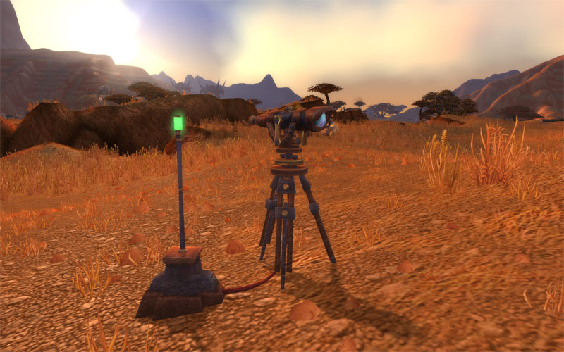
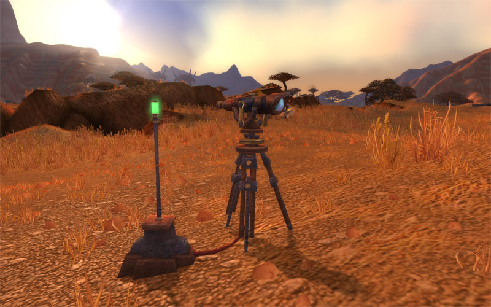

- wowhead
- wowdb
- thottbot
- wow-professions
Sources
Obtaining Underlight Angler
Prerequisites
The list of prerequisites is deceivingly short. You must:
- Be level 110
- Have level 800 fishing Not required but you will probably get it anyway
- Complete the achievement Bigger Fish to Fry
Reaching level 110 from 100 takes around 8-10 hours, depending on how quickly you complete quests and how easily you get distracted. You will easily reach max level fishing by completing the achievement. Neither of these will take a lot of time, and most players will naturally complete both.
...
Legion Cooking Guide
This Cooking leveling guide will show you the fastest way how to level your Cooking skill from 1 to 800.
Updated for Legion patch 7.0.3
Cooking in Legion has a new set of tasty recipes, including Bacon, as well as the return of our Pandaria chef friend Nomi! This guide covers all of the World of Warcraft Legion Cooking additions and changes, including recipe discoveries.
- Higher ranks for new Legion recipes are learned via Work Order discoveries.
- Each Cooking Recipe has three ranks. Higher ranks let you craft more food per reagent.
- Cooking works differently than other professions--your max skill cap is not automatically increased to 800 when you pick up Legion cooking. You must hit level 98 and skill level 700 to learn the next rank.
...
Complete GuideLegion Archaeology Guide
This guide covers all of the World of Warcraft Legion Archaeology additions and changes, including new rare solves and Archaeology branches.
Legion Changes
- Dig sites are much more compact--less running around to do.
- When you reach the right area, a shovel appears over your head.
- Three Broken Isles digsites spawn at once, vs four in older zones.
- There are fewer common-quality artifacts from Legion zones, which should make the process of acquiring Pristine solves easier.
- There is a special Archaeology building in Dalaran. This is where you will train archaeology, pick up quests, and show off your Legion Pristine Artifacts.
...
Complete GuidePatch 7.0.3
Most relevant changes:
- The Stranglethorn Fishing Extravaganza has taken a temporary hiatus while the fish are restocked.
- The 5v5 Arena bracket has been retired. "Arena Master" achievement has been converted into a Feat of Strength.
- Master Tamers in Draenor now reward half as many Pet Charms as before.